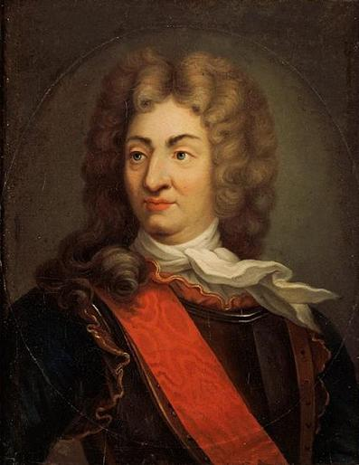
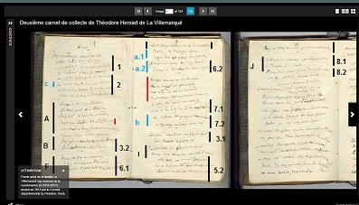

DUGE
DUGUAY-TROUIN
Chant collecté par Théodore Hersart de La Villemarqué
dans le 1er Carnet de Keransquer (pp. 187-188) et dans le 2ème (pp. 8-10)
Chant de marins
|
Pas de mélodie connue. Remplacée ici par un chant de marins traditionnel. |
No tune known. Replaced here by a traditional Breton song. |
1° DUGUE
DUGUAY - TROUIN
Collecté par La Villemarqué, 1er Carnet de Keransquer pp. 187 et 188
|
BREZHONEK DUGUE p. 187 A. Duge a Vrest pa partias Da Baris gant dezir vras Evit saludiñ roue hag ar rouanez, Mab ar roue kerkoulz vel d'ar priñsez. B. E Pariz emaint kontristet Kleved raent oa Duge marv. Kourajuz oa vit sikour ar vro: Barzh ar Kamalet en amzer gozh Eno oa diskennet ar Saoz, C. Gant holl listri emaint fardet Ha karget holl a zoudarded. Douaret int da Zant Malou Ne 'z int ket aet holl d'o bro. D. Bragal a raet diwar ar mor Gant o gouelioù digor, Gant o listri emaint fardet, Ha karget holl a zoudarded. E. Gant tennoù a gouezh ar Zaozon Kerkent ha ma gouezh ar gudon. p. 188 F. Mez deus ar Vro-Saoz ar rouanez [*] Honnezh defe bet c'hoant aliez, C'hoant da wel Duge, Klevet lar voa den vailhant Komz anezhañ rae dezhi kalz a gontantamant. G. Klevet ne a oa an den kaezh Evit dont n'he rouantelezh. H. - Marv, c'hwi a zo dreist ar bord C'hwi 'peus attaket va support. - I. Sentoud a rae kleñved kreskiñ Dont rae an eur. Red vo differiñ Gand keloù en-doa kollet e vuhez? Nag a lakas Breizh e tristidigezh! J. - Adieu, Port-Louis ha c'hwi Sant-Malo, Paz ean d'ho kuitaat 'z ean da skuilhañ daeroù. Adieu, adieu, tremen a ra va joa, Adieu deoc'h, traonienn Jozafat! - [*] Rouanez Ana |
TRADUCTION FRANCAISE DUGUAY-TROUIN p. 187 A. Quand Duguay de Brest est parti Il voulait se rendre à Paris Saluer le roi et la reine Et les enfants royaux de même. B. A Paris, l'on est attristé D'apprendre la mort de Duguay. Hardi défenseur du pays: A Camaret, il l'a montré Quand l'Anglais avait débarqué, C. Avec ses vaisseaux bien gréés Et pleins à craquer de soldats. Ainsi qu'à Saint-Malo, je crois: Plus d'un n'est pas rentré chez soi. D. Eux qui paradaient sur la mer Avec toutes voiles en l'air, Et leurs impeccables gréements, Des soldats pleins leurs bâtiments. E. Sous ses coups tombaient les Saxons Comme tomberaient des pigeons. p. 188 F. Aussi la reine d'Angleterre [*] Disait-elle souvent vouloir, Ce valeureux Duguay, le voir, Lui que l'on disait si vaillant Et elle en parlait constamment. G. On lui disait que le pauvre homme Devait visiter son royaume. H. - Mort, tu viens de passer les bornes Tu t'en prends à ce j'ordonne. - I. Il sentit la mort sur le seuil, L'heure venait, pourquoi biaiser? La nouvelle de son décès Plongea les Bretons dans le deuil! J. - Adieu, Port-Louis et Saint-Malo, Vous quitter m'arrache des larmes. Ma joie, je dépose les armes Jusqu'au jugement du Très-Haut! - [*] La reine Anne Traduction: Christian Souchon (c) 2014 |
ENGLISH TRANSLATION DUGUAY-TROUIN p. 187 A. When Duguay, leaving Brest behind, Went to Paris, he had in mind The King and the Queen to greet, The King's son and daughter to meet. B. Parisians are grieved at the news Of the death of Duguay-Trouin whose Merits at sea were so great: He proved his worth at Camaret Where the English had tried to land C. With their ships well-rigged and in trim And with soldiers full to the brim. Saint-Malo, too, they did attack: Many of them did not sail back. D. Boasting on the sea all the way With their snow white sails on display, Their ships were well-rigged and in trim And with soldiers full to the brim... E. However they shot the Saxons As they would have as many pigeons! p. 188 F. Therefore the Queen of England [*] Expressed the wish that was instant, The valorous Duguay to meet, Since all said he was so gallant That was a wish she would repeat. G. She had been told that the great man Would come and visit her kingdom. H. - Death, this time you overdid it: Queen's order should be a limit! - I. But now death was on the threshold, Time was up. No ground to withhold The news of the great man's decease That caused many Bretons to grieve! J. - Farewell, Port-Louis and Saint-Malo, With overflowing eyes I go My joy is gone till the harvest Falls in the Vale of Josaphat! - [*] Queen Anne Translation: Christian Souchon (c) 2014 |
NOTES:
|
Bibliographie: Manuscrits: - Coll. Penguern, t.95: Dugé (= Mélanges d'Arbois de Jubainville); t.112: Chanson Ducgaitrouin ( = Mélanges d'Arbois de Jubainville); Dugay-Trouin (Taulé, 1850) ( = Mélanges d'Arbois de Jubainville); René Duguay-Trouin "Né à Saint-Malo en 1673, il se distingua sous Louis XIV dans la marine marchande, puis dans la marine royale; il eut ensuite la faveur du régent et du cardinal Dubois; en 1728 Louis XV le nomme commandeur de Saint- Louis et lieutenant général des armées navales . En 1731 il commande une escadre dans le Levant : en 1733, les armements des Anglais inspirant quelque inquiétude, il reçoit le commandement d'une escadre qu'il est chargé d'équiper à Brest; il s'en occupe activement, mais ces préparatifs sont inutiles : il tombe malade dans cette ville, se fait transporter mourant à Paris ; il reçoit peu avant sa mort une lettre du cardinal Fleury lui promettant que le roi n'oubliera pas sa famille. Il meurt en 1736, assez isolé, semble-t-il." (Extrait de "Une chanson bretonne: la mort de Duguay-Trouin" par P. Le Roux, in "Mélanges d'Arbois de Jubainville" (1905). Autres chants sur Duguay-Trouin Ce chant et celui qui suit, tiré des manuscrits de Penguern, sont deux versions de la même élégie: les hypothétiques adieux de Duguay-Trouin à la famille royale. Une note de Penguern indique cependant qu'il a dû en exister d'autres. P. Le Roux, l'auteur de l'article des "Mélanges" la cite comme suit: "Penguern cite un passage intéressant des Mémoires de Duguay-Trouin. En 1693, par suite d'une erreur de signal de son chef d'escadre, le marquis de Nesmond, Duguay-Trouin n'avait pas attaqué un vaisseau anglais: « Cependant les équipages des autres vaisseaux, qui avaient tous les yeux sur moi comme étant le plus près des ennemis et qui me virent carguer ma grand-voile...furent assez injustes pour interpréter à mon désavantage la manuvre que j'avais faite par obéissance. Ils me taxèrent de peu de zèle dans leurs chansons matelotes, mais ils en ont fait tant d'autres depuis à mon honneur, qu'ils ont bien authentiquement réparé cette injustice (Vie de M. Duguay-Trouin écrite de sa main. Paris, Furne, 1884, p. 46).» La "chanson de Taulé" P. Le Roux remarque: "Il y eut donc de nombreuses chansons françaises en l'honneur de Duguay-Trouin. Comme il était marin et breton il eut sans doute bien des matelots bretons sous ses ordres ; rien d'étonnant qu'il ait été célébré dans des chansons bretonnes, originales ou d'imitation. La chanson toute de circonstance que nous avons ici fut probablement composée peu de temps après sa mort, et on peut rappeler qu'il séjourna assez longtemps à Brest avant d'aller mourir à Paris." Il ajoute: "Il y eut aussi sans doute d'autres chansons bretonnes célébrant plus particulièrement ses exploits. Quelques vers recueillis par Penguern le laissent supposer; voici une note de lui, collée sur la feuille même de la chanson qui nous occupe: « 18 juillet 1847. Marie Kerné, de Taulé, avait souvent entendu sa mère chanter la complainte de Duguay-Trouin. Mais elle ne se rappelait que le 1er couplet:
Ces mêmes vers sont reproduits dans la même collection au vol.95, p. 228 2 , avec deux autres vers à la suite: c. Da souten gant joa kurunenn ar Roue Gant ur feiz kreñv hag ur gwir garantez. (Soutenons avec joie la couronne du roi: Mettons-y notre amour et toute notre foi!) Il semble bien que dans ce vol. 95 une chanson sur Duguay-Trouin ait disparu. A-t-elle été publiée ? Il m'a été impossible de faire à ce sujet toutes les recherches nécessaires. Je ne serais pas loin de croire que certains passages insérés dans notre chanson aient primitivement appartenu à une autre chanson, p. ex. le 7 e couplet, [en italiques] qui semble bien isolé ici, et faisait sans doute partie d'un récit de combat." Version du 2ème carnet de Keransquer La publication en novembre 2018 du 2ème carnet de Keransquer répond en partie à cette dernière question. Il contient (pp. 8 à 10) un chant intitulé "Dughé" qu'on trouvera ci-dessous en 3ème partie. Un coup d'oeil au fac-simile de ces pages montre que ce chant cite successivement : - les strophes 1, 2, 3.2, 6.1, 6.2, 7.1, 7.2, 3.1, 5.2, 8.1 et 8.2 du manuscrit de Penguern; - les strophes A, B, F, I et J du 1er carnet de Keransquer qui recoupaient partiellement les précédentes (3.2, 6.1 et 8.1) ; - les strophes a.1, a.2 et b du chant de Taulé (avec une citation de la strophe c, incluse dans la strophe 2 de De Penguern). Entre les strophes a1-a2 d'une part et b d'autre part est inséré un quatrain inconnu jusqu'à ce jour qui annonce la strophe 7, comme le supposait P. Le Roux: il s'agit du dernier. exploit de Duguay qui entre dans une ville assiégée à la tête de ses hommes, sabre à la main. Le carnet N°2 contient en outre un vers supplémentaire qui prend place après le 3ème vers de la strophe A. Le "Combat de Saint-Cast" du "Barzhaz Breizh" Bien que M. Donatien Laurent ne le fasse pas dans la notice bibliographique qu'il consacre à ce chant, page 254 de son ouvrage (chant XCII), on peut se demander s'il ne convient pas de rapprocher le "Duguay-Trouin", noté par La Villemarqué, des 6 couplets du "Combat de Saint-Cast" dont un exemplaire de la main de Joseph de Calan (1804 - 1899) existe parmi les manuscrits de Keransquer; et si le premier texte n'a pas, concurremment au second, inspiré certains passages su "Combat de Saint-Cast" du "Barzhaz". En effet on note les correspondances suivantes:
Un détail qui illustre la popularité du personnage: Dans le conte de Merlin "Jozebig" publié par Jef Philippe, le père de l'héroïne s'appelle Duguay. |
 René Duguay-Trouin par Antoine Graincourt (18ème s.)  |
Bibliography: Manuscripts: - Coll. Penguern, t.95: Dugé (= Mélanges d'Arbois de Jubainville); t.112: Chanson Ducgaitrouin ( = Mélanges d'Arbois de Jubainville); Dugay-Trouin (Taulé, 1850) ( = Mélanges d'Arbois de Jubainville); Duguay-Trouin "Born in Saint-Malo in 1673, he distinguished himself during the reign of XIV in the merchant fleet, then in the royal navy; he then became a favourite of the Regent and cardinal Dubois; in 1728 Louis XV made him commander of the Order of Saint- Louis and Lieutenant general of the navy. In 1731 he commanded a squadron in the Levant. In 1733, since the English expenditures on arms gave cause for concern, he was entrusted with fitting out a squadron based in Brest; when he was busy carrying out this task, he became ill in this town. He gave orders to be forwarded to Paris; A short time before his death he received a message from Cardinal Fleury assuring him that the king would take care of his family. He died in 1736, rather in isolation apparently." (Excerpt from "A Breton song on the death of Duguay-Trouin" by P. Le Roux, in "Miscellany to honour d'Arbois de Jubainville's memory" (1905) Other songs on Duguay-Trouin This song and the following drawn from the de Penguern MSs, are two versions of the same elegy: the supposed farewell of Duguay-Trouin to the royal family. There is a note in de Penguern's handwriting to the effect that there must have been other similar songs. P. Le Roux, who wrote the below article in "Miscellany" quotes it as follows: "Penguern quotes an interesting passage in Duguay-Trouin's Memories. In 1693, following a misconstrued signal given by his squadron leader, Marquis de Nesmond, Duguay-Trouin failed to engage an English vessel: «Yet the crews of the other ships who all stared at me as being nearest to the enemy and saw that I was furling my main sail...were unjust enough to interpret in a disparaging way the manuvre I had carried out by sheer obedience. They scoffed at my lacking zeal in their sailors' ditties, but they have made since then so many others in my honour, that they have really made good for this rash judgment (Life of M. Duguay-Trouin written by himself. Paris, Furne, 1884, p. 46).» The "song from Taulé" P. Le Roux remarks: "The inference is that there were several French songs to honour Duguay-Trouin. Since he was a sailor and a Breton sailor, he had, to be sure, Breton sailors under his command; what wonder if he was celebrated in Breton ditties, genuine songs or pastiches. The very occasional present song probably was composed soon after his death, and it should be reminded that he stayed for a rather long time in Brest, before he left for Paris where he died." P. Le Roux adds: "There were possibly other Breton songs extolling more specifically his exploits. A few verses gathered by de Penguern hint at them, as does this note in his handwriting, stuck onto the leaf where the song at hand was jotted down: « 18 July 1847. Marie Kerné, from Taulé, often had heard her mother sing the ballad of Duguay-Trouin. But she could remember only the first stanza:
The same lines are copied in the same MS collection in Book N°95, p. 228 2, with two additional lines: c. Da souten gant joa kurunenn ar Roue Gant ur feiz kreñv hag ur gwir garantez. (To support with ardour the crown of our King With steadfast faith and true loving) It looks like in the said Book 95 a song on Duguay-Trouin is missing. Was it published? I was not in a position to investigate this question sufficiently. But I tend to suppose that some passages now inserted in our song formerly belonged into another ballad, e. g. stanza 7, [ italics] which appears to be out of its context, that was presumably the story of some fight." Version of the 2nd Keransquer notebook The publication in November 2018 of the 2nd Keransquer notebook partly answers this question. It contains (pp. 8 to 10) a song entitled "Dughé" which will be found below in the third part. A look at the opposite facsimile of these pages shows that this song quotes successively: - stanzas 1, 2, 3.2, 6.1, 6.2, 7.1, 7.2, 3.1.5.2, 8.1 and 8.2 of the Penguern manuscript; - stanzas A, B, F, I and J of the 1st Keransquer notebook which partially overlap the previous ones (3.2, 6.1 and 8.1); - stanzas a.1, a.2 and b of "Taulé's song" (with a quote from stanza c, included in stanza 2 of the De Penguern version). Between stanzas a1-a2 on the one hand and b on the other hand is inserted a quatrain which was unknown until today which announces stanza 7, as P. Le Roux correctly supposed: it is the last feat of Duguay who enters a besieged city at the head of his men, sword in hand. Notebook No. 2 also contains an additional verse which takes place after the third verse of stanza A. The "Combat of Saint-Cast" in "Barzhaz Breizh" We also may wonder if we should not parallel the "Duguay-Trouin" song recorded by La Villemarqué, with the 6 stanzas of the "Combat of Saint Cast" in Joseph de Calan's (1804 - 1899) handwriting found among the Keransquer MSs; and if the former text, together with the second has not inspired La Villemarqué with some passages in his "Combat of Saint-Cast" as published in the "Barzhaz". Here are correspondences in support of this assumption:
A detail highlighting the popularity of this character: In the Breton Merlin tale "Jozebig" published by Jef Philippe, the heroine's father is called Duguay. |
2° CHANSON DUCGAITROUIN
La Chanson de Duguay-Trouin
MS de Penguern: t. 112 - Mélanges d'Arbois de Jubainville
|
BREZHONEK CHANSON DUCGAITROUIN 1. Me ho supli offisourien, Holl dud a vor, navigourien, Soudarded ha martoloded, Jeneral Duge zo desedet. [*] 2. Gant justis kaout reas kommandamant an arme, (=c.) Souten vras da gurunenn ar roue. An holl er vro kredit en assurañs Lakaat a rae poan da zouten ar Frañs! 3-1. Duge, daeloù 'n e zaoulagad, A lare adieu a galon vat Da roue a da rouanez gant glac'har bras, Gant ar fin dezhe: da Duk de Louis. 3-2. Da Duk de Louis, kerkoulz ha da briñsed. Dre ar marv en-deus o surprenet: Ha dre gleved en-deus kollet e vuhez A lak er Frañs tristidigezh. 4-1. O pebezh kañv ha tristidigezh Da varv Duge barzh er palez! Ha partout dre ker oa glac'haret Kleved prezheg anezhañ ma oa desedet. 4-2. Hag int da grial o kleved e oa eñ marv Ha lakaat rae e boan da zouten ar vro. 5-1. Marv, te zo kriz dreist ar bord Da vezañ surprenet pasport. Na respetas na bihan, na bras, N'eus pasportaj, toud faot dit o c'has! 5-2. Na priñs, na duk, na manac'h, na belek: Rak se pretand toud d'ar memez andret! A daolioù kriz, pa deues da gouezhañ, A graez nerzh deus o lazhañ! 6-1. (=F) Deus ar Vro-Saoz ar rouanez He-deus bet c'hoant vras alies, Da weled Duge, ' klevoud e oa vailhant: Biskoazh he-deus-bet ar seurt kontantamañt. 6-2.(=a-2.) O klev'd prezh'g anezhañ mar rae dezhe oror Dre ma oa e armoù ajil diwar ar mor. 7-1. Pa e rejimañt aon a voe bet. An holl soudarded en em konfortet 7.2. Añtreal a reas gant e holl ekipaj En e zorn e sabrenn, ennañ leun a kouraj. 7-3. (=b) A daolioù bomb pe a dennoù kanol, O gemere ha gouneze ar viktor. 8-1. - Adieu ta, perzhier ar mor hag al listri! M'am-eus graet anezhe meur d'a-walc'h hag ar mis! E Brest, en Oriant hag e Porzh-Louis, E Rochefort, e Tours kerkoulz hag e Pariz. 8-2. (=J) Paz 'ean d'ho kuitaat, da skuilhañ daeroù, Va pasportaj adieu, lavaromp kenavo, Lavaromp kenavo e traon Jozafat! 9-1. Adieu eta, komandanted, Holl dud a vor, jeneraled, E-barzh moned da guitaad ar bed-mañ, Un dra c'hoazh a lavaran: 9-2. Soutenit gan joa kurunenn ar roue, Soutenit gant gwir feiz ha gwir umilitez! Ha pedit evidon Jezuz peurravissant Vit resev va ene ebarzh ar firmamant! - Bolloré François |
FRANCAIS LA CHANSON DE DUGUAY-TROUIN 1. Officiers et vous, gens de cur, Gens de mer et navigateurs, Soldats, matelots, apprenez La mort du général Duguay [*]. 2. S'il fut commandant d'une armée, c'est à bon droit, (=c.) Le plus grand soutien de la couronne et du roi. Vous tous en ce pays, ayez-en l'assurance Il fut un dévoué défenseur de la France! 3-1. Duguay qui, les larmes aux yeux, De bon cur avait dit adieu Au monarque, à la reine, avec grande affliction, Quand sa fin approchait, au Duc Louis de Bourbon, 3-2. Au duc Louis de Bourbon, d'autres princes aussi. Mais quand sa mort fut là, il les a tous surpris: D'entendre qu'il était vaincu par la traitresse Plongea notre pays entier dans la tristesse. 4-1. O, que de deuil emplit, de profonde affliction Pour la mort de Duguay, la royale maison! Toute la grande ville en était désolée Quand la nouvelle dans les rues s'est propagée. 4-2. Plus d'un s'écria, quand il sut qu'il était mort, Que le pays perdait son plus noble support. 5-1. Car la mort est dans sa nuisance Peu soucieuse des préséances. Petits ou grands, que croyez-vous? Nul passe-droit: il lui faut tout! 5-2. Qu'on soit prince ou duc, moine ou prêtre Au même endroit vont tous les êtres Quand ses coups cruels elle assène, Que de force elle les emmène! 6-1. (=F.) 7Même la reine d'Angleterre, Elle n'en faisait point mystère, Voulait voir Duguay le vaillant Mais n'eut pas ce contentement. 6-2. (=a.2.) Quand on parlait de lui, c'était de la terreur Que ses armes faisaient régner de par les mers; 7-1. Un jour son régiment était pris de panique. Il sut le rassurer par son exemple unique: 7.2. Il s'avança, flanqué de tout son équipage, Lui-même, armé d'un sabre et de son seul courage. 7-3. (=b.) Coups de canon, bouches à feu, Le rendaient toujours victorieux. 8-1. - Adieu donc, portes de la mer et bâtiments Où j'embarquais chaque mois, sinon plus souvent A Brest, à Lorient, aussi bien qu'à Port-Louis, A Rochefort, à Tours, aussi bien qu'à Paris. 8-2 (=J.). Je viens à vous quitter, j'ai les larmes aux yeux, Privilèges adieu! Amis ne pleurez pas: Nous nous reverrons tous au val de Josaphat! 9-1. Adieu, gabiers et matelots, Soldats, commandants, généraux, Avant de quitter cette vie, Souffrez encor que je vous prie: 9-2. Soutenez avec joie la couronne du roi, Avec humilité et véritable foi! Priez pour moi Jésus au cur compatissant Qu'il reçoive mon âme au sein du firmament! - Bolloré François (*) 'Le titre de "général" que Duguay a ici vient sans doute de ce qu'il avait été "lieutenant général des armées navales". C'est aussi ce qui explique "commandamant an arme" de la strophe suivante. (Note de P. Le Roux) Traduction: Christian Souchon (c) 2014 |
ENGLISH SONG OF DUGUAY-TROUIN 1. I beg you, officers, listen Sailors all and sea-faring men, Soldiers, topmen, to what I say: General Duguay passed away! [*] 2. It was with good reason that he led an army, (=c.) A support to the crown he served the King truly. Ye all in this country take it for ascertained That no better champion the cause of France maintained! 3-1. Duguay, with eyes over-brimming Had said farewell to the King And Queen and was distressed sore, Knowing he would see them no more. 3-2. Nor would he Duke Louis de Bourbon And other princes: his burden Would by death soon be taken up... France, wine of sadness fills your cup! 4-1. O, how mournful and prostrate Made Duguay's death the King's estate! Both palace and city were grieved When they all heard he was deceased. 4-2. Many a stoic eye at the sad news shed tears: He'd been the best support of the country in years. 5-1. Death, this time you overdid it You have trespassed a limit! Whether great or small, you don't care, The fate you impose, all must share! 5-2. Prince, or duke, or monk, or priest, all Are on their way to the same goal! The lethal blows you deliver, Will spare no one whomsoever! 6-1. (=F) Now, the queen of England herself Who often had the wish expressed To meet Duguay, who was so brave, Never did and lay in her grave! 6-2. (=a.2.) Saxons who heard of him, they were horror-stricken His skills at manuvring did their terror quicken. 7-1. Once his own people were afraid. To comfort them he took their head 7.2. He cried "Away boarders!" at best: Cutlass and spirit did the rest. 7-3. (=b.) But it was with bombs and gunnery, That he did ensure victory. 8-1. - Fare ye well, sea gates all and stately vessels! No more shall I venture on the shaky trestles As I did every month in Brest, Lorient, Port-Louis, In Rochefort, in Tours and even in Paris. 8-2. (=J.) On the brink of leaving these places I shed tears, 'T was a privilege when your names came to my ears: We shall meet again in the Vale of Josaphat! 9-1. Farewell, generals, commanders, Farewell, brave topmen and sailors, Before I leave this lesser world, The royal banner be unfurled! 9-2. Be enthusiastic in supporting our King's crown, With humbleness and all the faith you call your own! And pray for me to God and His Son Jesus-Christ They may admit my soul in Their blessed paradise! - Boloré François (*) If Duguay is styled here "General" it likely refers to his being appointed as "Lieutenant general of the navy", which also accounts for the "commandamant an arme" in the following stanza. (Note by P. Le Roux) Translation: Christian Souchon (c) 2014 |
3° DUGHE
DUGUAY - TROUIN
Collecté par La Villemarqué, 2ème Carnet de Keransquer pp. 8 -10
(En caractères gras: passages inédits jusqu'à novembre 2018)|
BREZHONEK DUGHE p. 8 1. Me ho ped holl pennadoù lestr, Holl dud a vor, levierien, Martoloded, ha c'hwi holl soudarded, Ar c'habiten Duge zo douaret! 2. Ha "chef descadre" ha penn kentañ an arme, Ha souten braz da gurunenn ar Roue, Ur c'holl braz eo d'ar vro, eus-a all Lakaat a rae e boan 'vit souten Bro-C'hall. --- A. Dugé a Vrest pa bartias Da Baris gant un c'hoant braz, Da zaludiñ ar Roue hag ar Rouanez, Mab an Delfin, hag an Delfinerez Ar c'hourt a Roue kerkoulz evel ar briñsed, B. E Pariz ar bobl a oa glac'haret, 3-2.Dre glevet en-deuz kollet e vuhez Da lakaat Bro-C'hall e tristidigezh. --- 6-1. (=F) Eus a Vro-Saoz ar Rouanez He- deus bet c'hoant braz alies, Da wele Duge, o klevout e-voa vailhant. Page 9 / 5 Klevet komz anezhañ a oa he dudi amañ . a-1. Pehini ra da Zaozon krenañ Hag a lak o arme da spontañ. 6.2. (=a-2) Klevout komz anezhañ, he-deveze horror Dre m'oa doujet he arme war ar mor = Komzoù am-eus ar vailhantezoù A ra Duge, ar gounidoù Rak ma oa alies lavaret An diwezhañ ker en-devoa kemeret, 7.1. A eaz tre gant un ekipaj E oa n'e zorn ur sabrenn a oa noaz 7-2. (=b) A daolioù bomb hag a dennoù kanol, A gemeras en-divez ar viktor. --- 3-1. Duge an dour en e zaoulagad, Lar kenavo a galon vat, I. Gwelout a ra e gleñved o kreskiñ Dont a rae an eur ma ranke diminuiñ. 5-2. Na duk, na moraer, na kastizer, Pa vez deuet an eur, an holl a rank monet: Skoet a vez holl pa vimp en aessañ p. 10 Ha deus-a- greiz an eur pa zoñjer nebeutañ. ********** J. (=8-1)." E Brest, en Oriant, e Porzh-Loeiz, e Rochefort, E Pontgroaz, e Sant-Malo, 8-2. Paz ean d'ho kuitaat, ez ean da skuilhañ daeroù, Na pa borzhian, kenavo lavaran! Kenavo e traonienn Josafat!" |
TRADUCTION FRANCAISE DUGUAY-TROUIN p. 8 1. Las, capitaines de navires, Vous tous, marins et timoniers, Matelots et vous gens de guerre, Duguay est mort et enterré! 2. Chef d'escadre, et chef de l'armée, De la Couronne le soutien, Quelle perte pour sa patrie, La France, qu'il servit si bien! --- A. Duguay de Brest était parti Pour Paris avec le dessein De saluer le roi, la reine, La Dauphine et fils du Dauphin La cour ainsi que tous les princes... B. A Paris, l'on est atterré 3.2 D'ouïr qu'il a perdu la vie. Plongeant dans le deuil sa patrie. --- F.(=6-1) Même la reine d'Angleterre Affirme-t-on, disait vouloir, Ce valeureux Duguay, le voir! p. 9/5 Aimant entendre ses exploits, a-1. Duguay faisait trembler l'Anglais, Et ceux qui lui faisaient la guerre. a-2. Son renom semait la terreur. Comme sur la mer comme sur la terre! = On m'a dit l'une des hardiesses Qui rendirent vainqueur Duguay, Et l'on en a beaucoup parlé: C'est la dernière forteresse, 7.1. Qu'à la tête d'un équipage Il prit, grâce à son seul courage, 7-2. (=b) Jusqu'à ce que bombe et canon De l'adversaire aient eu raison. --- 3-1. Donc Duguay les larmes aux yeux, De bon cur a fait ses adieux, I. Quand il sent le mal empirer: L'heure vient. A quoi bon biaiser? 5-2. La mort, qu'on soit duc, marin, prêtre Quand vient l'heure emporte chaque être, Frappant, quand l'on se sent serein p. 10 Et lorsqu'on y songe le moins. ********** J. (=8-1.) " Brest, Lorient, Port-Louis, Rochefort, Pont-Croix, ainsi que Saint-Malo, 8-2. Vous quitter m'arrache des larmes. Mais je rentre au port: bas les armes, Jusqu'au jugement du Très-Haut!" Traduction: Christian Souchon (c) 2019 |
ENGLISH TRANSLATION p. 8 DUGUAY-TROUIN 1. Captains of ships, lament with me, All of you, sailors and helmsmen, Warriors at land and at sea, Duguay is dead, lies in his tomb! 2. Commanding Navy and Army, He was the Crown's strongest support, He had served so well his country! Truly a loss of great import! --- A. Duguay left from Brest on that day To Paris. What he had in mind Was to greet the King and the Queen, The Dauphin's son and the Dauphine, The princes and such noble kind ... B. In Paris they were so sorry 3.2 To hear that he had passed away Plunging in mourning his country. --- F (= 6-1) The queen of England had expressed The wish Duguay would be her guest And, since she knew he was so brave, p. 9/5 G. (= 6-2) Would recount her his adventures: a-1. Duguay made the English tremble, And all those who made war on him. . a-2. No way their fear to dissemble. At sea, at land, the truth was grim. = I have been told a feat of arms That earned him the victory, Described to me in glowing terms: Last time when he seized a city, 7-1. At the head of a company Armed with his sword, his sole courage. 7-2. (= b) Till bombs and cannon joined the fray Which helped to carry the day. --- 3-1. So Duguay with tears in his eye, Had travelled far to say goodbye, I. Well he knew his death was coming: When time is up, no sidestepping! 5-2. Whether you are duke, monk or priest You will be the prey of the beast: That gives you a blow on your breast p. 10 At the time you expect it least. ********** J. (= 8-1.) "Brest, Lorient, Port-Louis, Rochefort, Pont-Croix, and Saint-Malo harbour, 8-2. I leave you. My tears are in vain I sail back home. We'll meet again, In the valley of Josaphat". |
"Combat de Saint Cast"